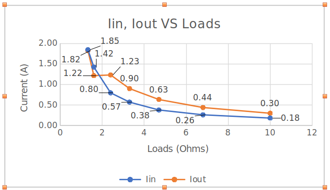

Results
Current Flow vs Load
Efficiency vs Load

Validating the performance of a DC-DC converter under various loads
Refer to the Datasheet Section for circuit schematics and component details.
For more information, visit the GitHub repository.